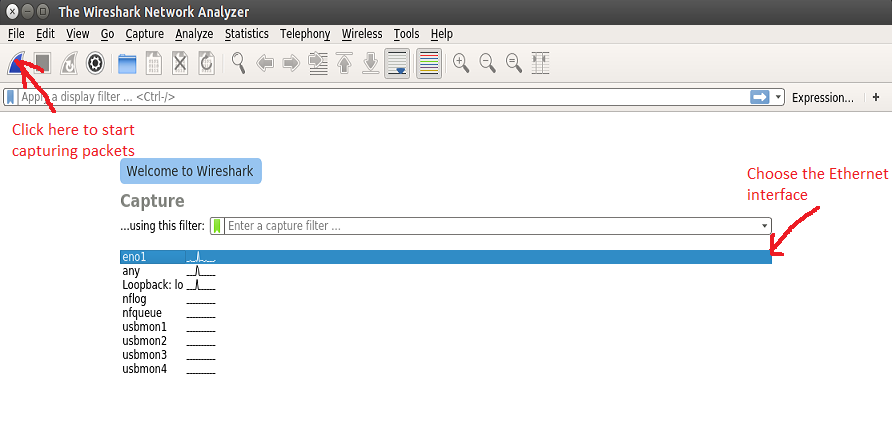
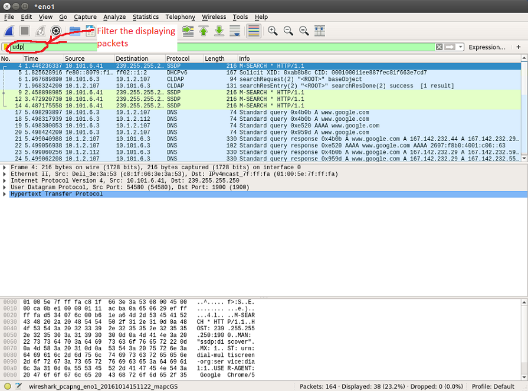
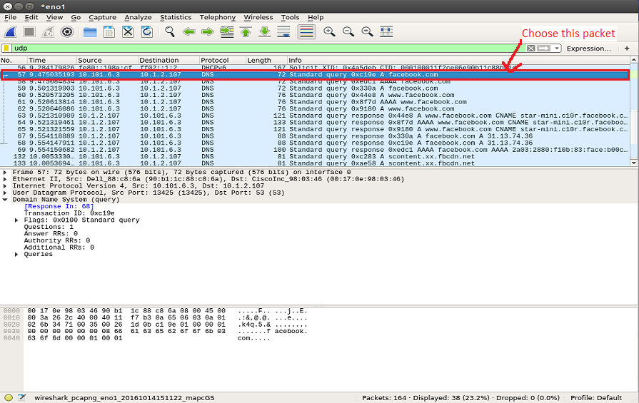
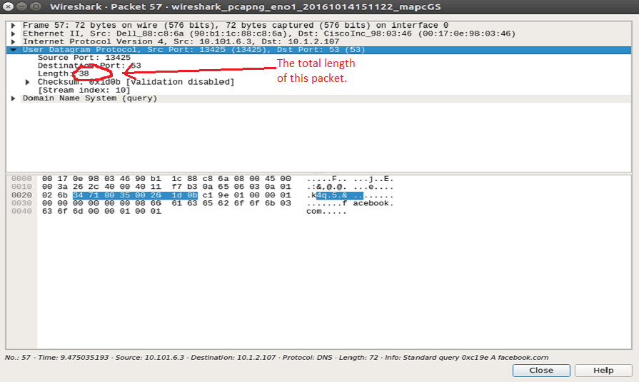
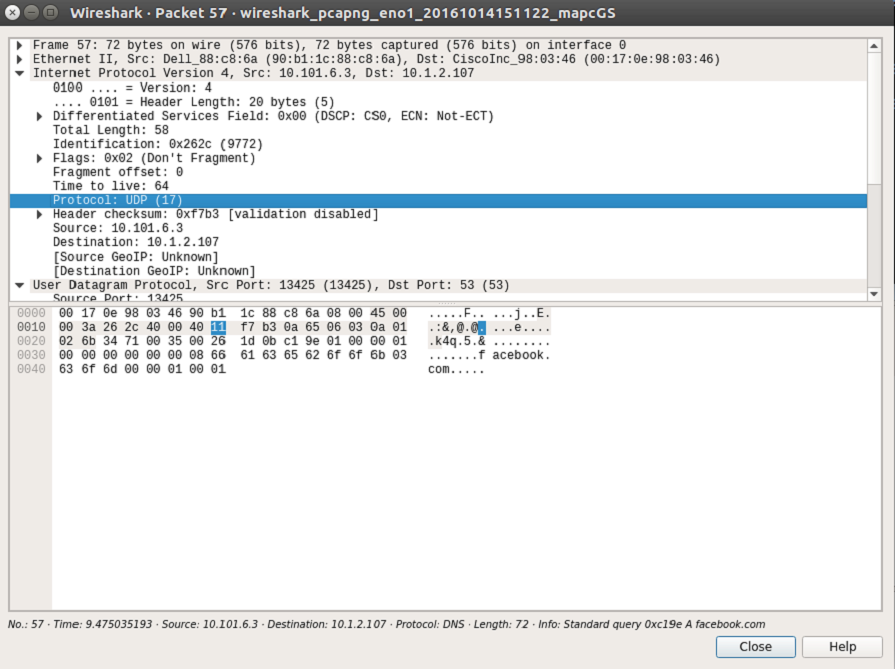
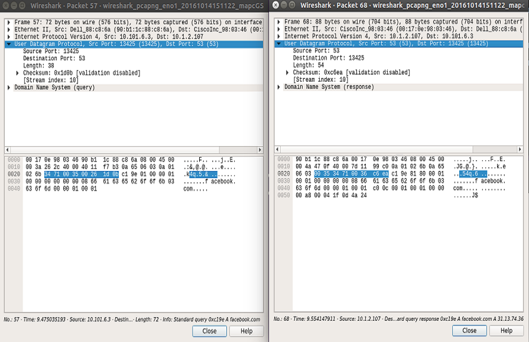

PART III: Wireshark Lab
UDP
- We first fire up Wireshark and choose the interface we want to capture packets and then start capturing packets
- Open a browser and go to a favorite Website. Here we use facebook.com as an expample
- Stop capturing packets. In the display filter, type in "udp"
- Now the Wireshark GUI is displaying packets that communicated through end systems by UDP protocol.
- In the Info column, find the packets that has "facebook.com"
- This message is using by DNS application, our computer sending the query for the alias hostname "facebook.com" to get the canonical hostname and then the IP address.
- The length field specifies the number of bytes in the UDP segment (header plus data), which in this case is 38 bytes.
- With 2 bytes in the Length field, the UDP segment can be up to (2^8)^2 = 65535 bytes. This also means that the maximum size of data delivered by UDP protocol is 65535 - 6 = 65529 bytes.
- The port source and destination numbers in the header field is in the range from port 0 to port 65535, represent by 2 bytes.
- A new window opens displaying the packet information uderlying 5 layers: Physical, Link, Network, Transport, and Application Layers from top to bottom respectively.
- Under the User Datagram Protocal shows the information of this UDP segment. There are 4 fields in the UDP header, which are Source Port, Destination Port, Length, and Checksum. The bottom window is displaying the data encoded in hexadecimal number. Each field in the header is represented by 4 digit, which is equals to 16^4 = (2^8)^2. This mean we need 2 bytes for each header field.
- Taking a look at the network layer, which implements the IP protocol in this case. We can see under the Protocol field the value of UDP (17). This field is used only when an IP datagram reaches its final destination. The value of this field indicates the specific transport-layer protocol to which the data portion of this IP datagram should be passed. For example, a value of 6 indicates that the data portion is passed to TCP, while a value of 17 indicates that the data is passed to UDP.
- Now we analyze the relationship between the sending and the receiving packets.
- These packets are sent from DNS appliction (the Domain Name System).
- As we already know, whenever we browse for a Website, we need to retrieve the IP address of the server of that Website by making the query to DNS server.
- The DNS server then will send back the response message to our query.
- In this expample, the left window shows the query message. Under the transport layer header fields, we can see these information:
- Source port: 13425
- Destination port: 53
- Length: 38 bytes - which means the size of this query is 30 bytes
- In the right window, we can see, from the server, the source port and the destination port are now switch around. The response data has the length of 54 - 8 = 46 bytes.





